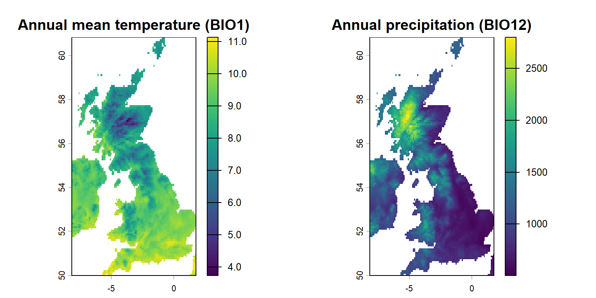
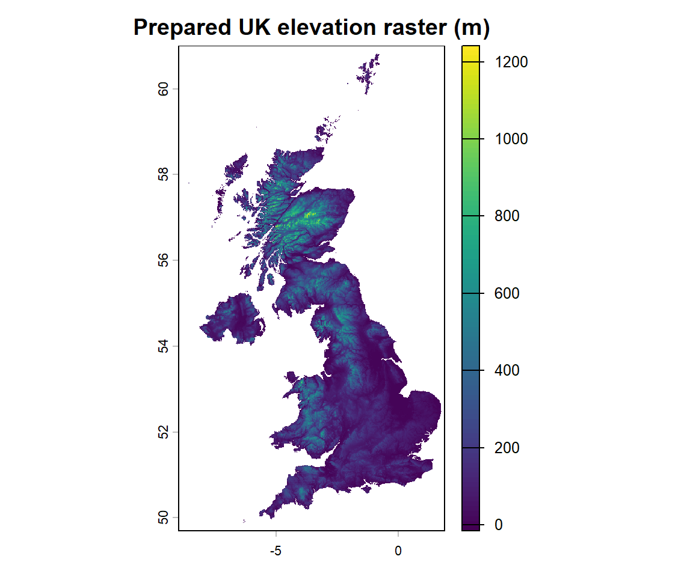
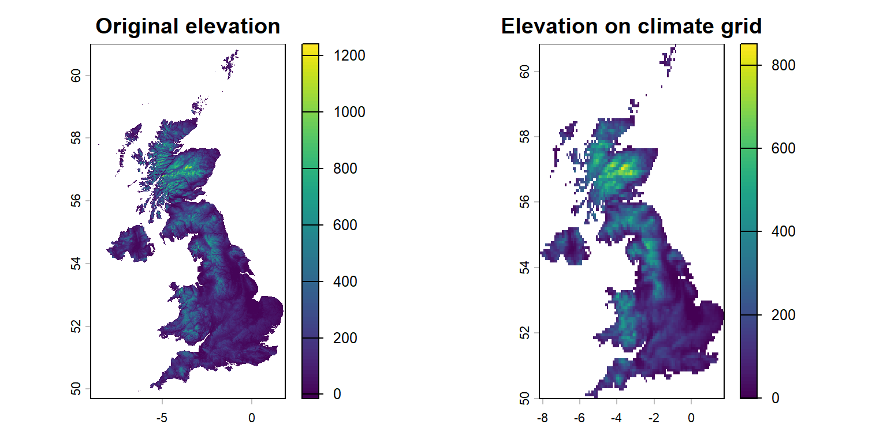
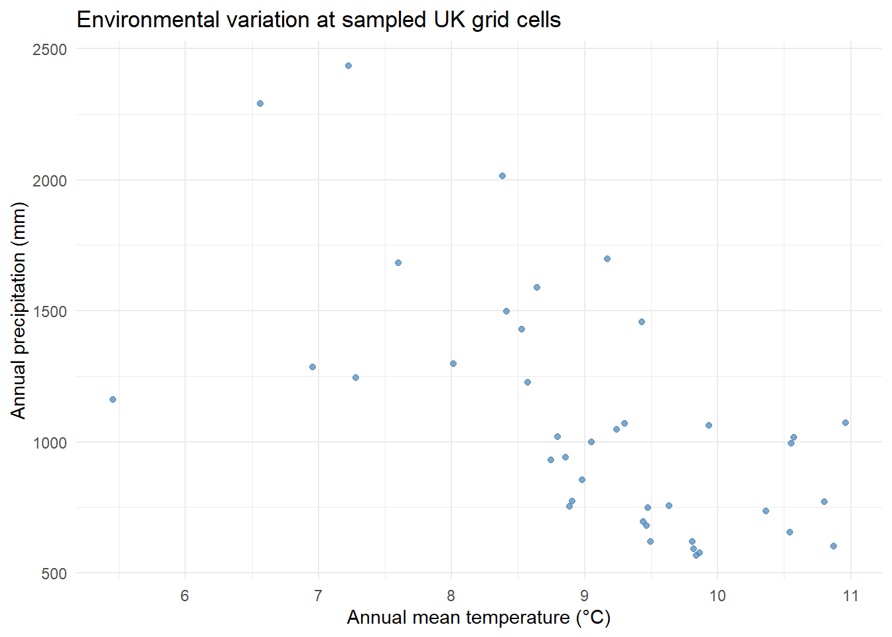
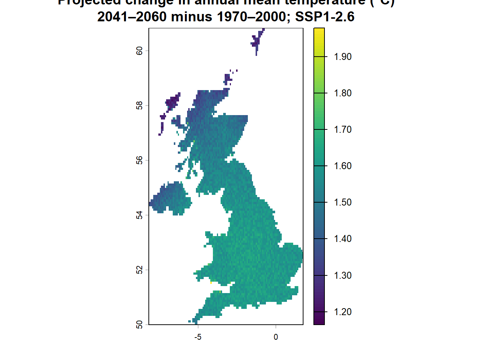

library(terra) # Read, inspect and align environmental rasters
library(sf) # Handle supplied UK boundaries
library(ggplot2) # Explore extracted environmental values
# Check your project folder and the supplied data
required_files <- c(
"data/workshop_data.RData",
"data/Clim_UK.tif",
"data/Elev_UK.tif"
)
stopifnot(all(file.exists(required_files)))
# Load the prepared UK boundaries and historical predictors
load("data/workshop_data.RData")
Clim_UK <- terra::rast("data/Clim_UK.tif")
Elev_UK <- terra::rast("data/Elev_UK.tif")
stopifnot(inherits(UK_sf, "sf"))
stopifnot(terra::nlyr(Clim_UK) == 19)
stopifnot(all(c("bio_1", "bio_12") %in% names(Clim_UK)))
message("Environmental input files loaded successfully.")Environmental Data
Climate, elevation, land cover, and predictors for species distribution models
Why environmental predictors matter
Species distribution models (SDMs) relate species records to environmental conditions. Climate, topography, land cover, soils and habitat structure can all be informative predictors, but a predictor should be chosen because of an ecological hypothesis—not simply because a raster is available.
This chapter follows Spatial Data in R and Species Data. You will explore prepared environmental layers, learn how to obtain your own data, align rasters and extract environmental values for modelling.
TipLearning outcomes
By the end of the core practical, you should be able to:
- Read and inspect environmental rasters and identify important BIO variables.
- Explain why spatial resolution, time period and predictor units matter.
- Align continuous elevation with a climate grid and assemble a named predictor stack.
- Explore relationships between predictors and extract raster values at locations.
A further example compares historical climate with a supplied future climate projection. Optional research extensions show how to download the original data independently and document your choices.
Start in your own RStudio project
Follow the homepage instructions to create your own RStudio project. Copy the examples into your own .R script and add comments as you work. The supplied datasets are used for the practical, while the optional download examples show how to obtain data for independent research. The website does not install packages or download data when it is built.
If the file check fails: open the correct RStudio project and check the data/ folder. Do not change your working directory with setwd() as a workaround. If you are continuing from Chapter 2, some of these objects may already exist; running this setup again is safe.
1. Historical climate: what do the variables represent?
Climate can influence species physiology, food availability, phenology and habitat suitability. WorldClim 2.1 provides historical climate summaries for 1970–2000. These are long-term climatological summaries, not current weather and not conditions measured on the exact date of every species observation.
WorldClim’s 19 bioclimatic (BIO) variables summarise annual means, variation, seasonality and extremes. For example:
| Layer | Ecological interpretation | Units in the supplied raster |
|---|---|---|
bio_1 |
Annual mean temperature | °C |
bio_4 |
Temperature seasonality | Standard deviation × 100 |
bio_12 |
Annual precipitation | mm |
bio_15 |
Precipitation seasonality | Coefficient of variation |
For the complete variable definitions, consult WorldClim’s BIO variable guide.
1.1 Inspect and map historical climate
The supplied Clim_UK.tif contains 19 named layers at 5 arc-minute resolution (approximately 9 km north–south; actual east–west distances vary with latitude).
names(Clim_UK) [1] "bio_1" "bio_2" "bio_3" "bio_4" "bio_5" "bio_6" "bio_7" "bio_8"
[9] "bio_9" "bio_10" "bio_11" "bio_12" "bio_13" "bio_14" "bio_15" "bio_16"
[17] "bio_17" "bio_18" "bio_19"terra::nlyr(Clim_UK)[1] 19terra::res(Clim_UK) # Cell size in degrees, not metres[1] 0.08333333 0.08333333terra::crs(Clim_UK, describe = TRUE) name authority code area extent
1 WGS 84 EPSG 4326 World -180, 180, -90, 90# Select variables by name rather than by layer number
clim_example <- Clim_UK[[c("bio_1", "bio_12")]]
plot(clim_example,
main = c("Annual mean temperature (BIO1)",
"Annual precipitation (BIO12)"))
Inspect: How do temperature and precipitation vary across the UK? What could explain the patterns?
Change: Plot bio_4 and bio_15 instead. What new ecological information do they provide?
NoteResearch extension: download WorldClim yourself
The code below shows the original acquisition route using geodata. It is visible so you can copy it into RStudio, but it is not run while the website is built. An internet connection and time for the global download are required.
library(geodata)
# Keep optional downloads separate from supplied workshop files
dir.create("data/optional_downloads", recursive = TRUE,
showWarnings = FALSE)
clim_global <- geodata::worldclim_global(
var = "bio", res = 5, path = "data/optional_downloads"
)
# UK_sf was loaded in the chapter setup
uk_vector <- terra::vect(UK_sf)
clim_uk_downloaded <- terra::mask(
terra::crop(clim_global, uk_vector), uk_vector
)
# Verify that the original data contain BIO1 ... BIO19
names(clim_uk_downloaded)
stopifnot(terra::nlyr(clim_uk_downloaded) == 19)
# Match the documented source order to the workshop naming convention
names(clim_uk_downloaded) <- paste0("bio_", 1:19)
plot(clim_uk_downloaded[["bio_12"]])
# Optional: save a NEW file, without replacing data/Clim_UK.tif
terra::writeRaster(clim_uk_downloaded,
"data/optional_downloads/Clim_UK_downloaded.tif", overwrite = TRUE)Compare: Do your download and the teaching snapshot have matching extent, resolution and missing-value patterns? Document data product, version, baseline period, download date and any crop/mask decisions. For the full provenance workflow, see Data Preparation.
2. Elevation: a predictor at a different resolution
Elevation may describe thermal and moisture gradients, exposure or topographic constraints. It can also be correlated with climate. Including both elevation and temperature therefore requires ecological justification, not just statistical convenience.
names(Elev_UK)[1] "GBR_elv_msk"terra::res(Elev_UK)[1] 0.008333333 0.008333333terra::crs(Elev_UK, describe = TRUE) name authority code area extent
1 WGS 84 EPSG 4326 World -180, 180, -90, 90plot(Elev_UK, main = "Prepared UK elevation raster (m)")
Inspect: Compare the elevation cell size with terra::res(Clim_UK). Can rasters with different resolutions be stacked directly for SDM prediction? What information would be lost if elevation is aggregated to the climate resolution?
NoteResearch extension: obtain elevation independently
The geodata package can retrieve elevation data without using the supplied file. This is an optional download, and coverage should be checked carefully for the intended study area.
library(geodata)
dir.create("data/optional_downloads", recursive = TRUE,
showWarnings = FALSE)
elev_downloaded <- geodata::elevation_30s(
country = "GB", path = "data/optional_downloads"
)
plot(elev_downloaded)
# For research, check coverage, source, vertical units and datum.
# Do not overwrite the supplied data/Elev_UK.tif.Remember that a dataset’s geographical coverage may not exactly match the polygon you choose as your SDM study area.
3. Other environmental predictors: land cover and habitat
Climate is not the only ecologically relevant environmental information. Local vegetation, built-up areas, wetland extent, soils, habitat fragmentation and land-use history can influence species distributions. Such predictors may be particularly relevant for a species whose fine-scale habitat use is poorly represented by coarse climate grids.
Land-cover classes (forest, cropland, built-up land) are categorical, whereas tree-cover fractions and vegetation indices may be continuous. This distinction matters when you choose a resampling method.
Potential sources include ESA WorldCover, Copernicus Land Monitoring and MODIS land products.
TipResearch extension: download a tree-cover fraction layer
The geodata::landcover() function retrieves a derived fractional land-cover product at 30-arc-second resolution. This example is not a download of the original 10-m categorical ESA WorldCover map.
library(geodata)
dir.create("data/optional_downloads", recursive = TRUE,
showWarnings = FALSE)
tree_fraction_global <- geodata::landcover(
var = "trees", path = "data/optional_downloads"
)
# Crop and mask to the prepared UK boundary
uk_vector <- terra::vect(UK_sf)
tree_fraction_uk <- terra::mask(
terra::crop(tree_fraction_global, uk_vector), uk_vector
)
plot(tree_fraction_uk, main = "Tree-cover fraction (illustrative)")Think about: Would a tree-cover fraction or a binary forest/non-forest class best represent your ecological hypothesis? How do the product date, resolution and accuracy relate to the occurrence data?
4. Align environmental layers before modelling
Core practical. Before combining environmental variables in an SDM, we need to make sure their spatial data are properly aligned. For example, climate and elevation rasters may cover the same geographic area but have different cell sizes or spatial grids.
We will use R to align these datasets so that environmental values can be combined and compared at the same locations.
4.1 Match elevation to the climate grid
# Use BIO1 as the exact grid template
climate_template <- Clim_UK[["bio_1"]]
# Reproject if the CRSs differ; otherwise only resample
if (!terra::same.crs(Elev_UK, climate_template)) {
Elev_UK_aligned <- terra::project(
Elev_UK, climate_template, method = "bilinear"
)
} else {
Elev_UK_aligned <- terra::resample(
Elev_UK, climate_template, method = "bilinear"
)
}
names(Elev_UK_aligned) <- "elevation"
# Verify that the output matches the climate grid
terra::compareGeom(climate_template, Elev_UK_aligned)[1] TRUEterra::res(Elev_UK_aligned)[1] 0.08333333 0.08333333# These rasters have different geometries: plot separately, not c(x, y)
original_par <- graphics::par(mfrow = c(1, 2))
plot(Elev_UK, main = "Original elevation")
plot(Elev_UK_aligned, main = "Elevation on climate grid")
graphics::par(original_par)Inspect: Compare the original and aligned elevation maps. Does a finer original resolution guarantee greater accuracy when combined with coarser climate data? Why not?
4.2 Build a named predictor stack
# Preserve the original bioclimatic layer names
Env_UK_stack <- c(Clim_UK, Elev_UK_aligned)
stopifnot(terra::nlyr(Env_UK_stack) == 20)
# A small three-predictor subset used in subsequent modelling chapters
model_predictors <- c("bio_1", "bio_12", "elevation")
proj_stack <- Env_UK_stack[[model_predictors]]
env_stack <- Env_UK_stack # Consistent name for later exercises
names(Env_UK_stack) [1] "bio_1" "bio_2" "bio_3" "bio_4" "bio_5" "bio_6"
[7] "bio_7" "bio_8" "bio_9" "bio_10" "bio_11" "bio_12"
[13] "bio_13" "bio_14" "bio_15" "bio_16" "bio_17" "bio_18"
[19] "bio_19" "elevation"names(proj_stack)[1] "bio_1" "bio_12" "elevation"terra::compareGeom(Clim_UK[[1]], proj_stack[["elevation"]])[1] TRUEResearch connection: Later chapters use temperature, precipitation and elevation to demonstrate SDM fitting. These three variables provide a manageable teaching example; for independent research, predictor selection should be justified by the species’ ecology, the question and the available data.
TipOptional: save an environmental checkpoint
To avoid recomputing aligned elevation in your own project, save a reusable checkpoint without changing the original inputs:
dir.create("data/checkpoints", recursive = TRUE,
showWarnings = FALSE)
terra::writeRaster(
proj_stack, "data/checkpoints/SDM_predictors_current.tif",
overwrite = TRUE
)
# Reopen it in a fresh R session:
# proj_stack <- terra::rast("data/checkpoints/SDM_predictors_current.tif")The saved file provides a useful checkpoint: you can reload the prepared environmental predictors in a later R session without repeating the alignment steps.
Keep the code used to prepare these predictors in your own R script, together with comments explaining each step. This allows you to reproduce the workflow from the original datasets whenever needed.
5. Extract and compare environmental conditions
Core practical. The same extraction procedure will later link environmental predictors to the cleaned species occurrences and to background locations. Here we use random illustrative locations with valid precipitation values. These are not bat observations or confirmed absences.
set.seed(123)
sample_points <- terra::spatSample(
proj_stack[["bio_12"]], size = 40, method = "random",
na.rm = TRUE, as.points = TRUE
)
# Extract all three predictor values at exactly the same locations
env_at_points <- terra::extract(
proj_stack, sample_points, ID = FALSE
)
head(env_at_points) bio_1 bio_12 elevation
1 9.468208 680 49.77142
2 8.012265 1298 NA
3 7.599500 1682 287.12167
4 10.574041 1016 94.13734
5 7.278125 1244 392.97672
6 8.382441 2015 NAsummary(env_at_points) bio_1 bio_12 elevation
Min. : 5.453 Min. : 567 Min. : 16.43
1st Qu.: 8.562 1st Qu.: 744 1st Qu.: 50.36
Median : 9.208 Median :1008 Median :115.76
Mean : 9.062 Mean :1086 Mean :142.18
3rd Qu.: 9.826 3rd Qu.:1288 3rd Qu.:183.57
Max. :10.961 Max. :2436 Max. :552.06
NAs :9 ggplot(env_at_points, aes(x = bio_1, y = bio_12)) +
geom_point(colour = "steelblue", alpha = 0.7) +
labs(x = "Annual mean temperature (°C)",
y = "Annual precipitation (mm)",
title = "Environmental variation at sampled UK grid cells") +
theme_minimal()
Inspect: Are temperature and precipitation independent across the sampled locations?
Change: Replace the scatterplot’s y = bio_12 with y = elevation. Which ecological explanations might account for their association?
5.1 Predictor correlation is not the same as ecological relevance
Strong correlations can complicate model interpretation because different predictors may provide overlapping information. However, removing predictors solely because they are correlated may discard biologically important variables. Predictor choice should reflect the question, species ecology and modelling method.
# Small demonstration using complete raster cells in the study grid
# For formal model selection, use the training/calibration data only.
all_predictor_cells <- terra::as.data.frame(proj_stack, na.rm = TRUE)
round(stats::cor(all_predictor_cells), 2) bio_1 bio_12 elevation
bio_1 1.00 -0.65 -0.83
bio_12 -0.65 1.00 0.70
elevation -0.83 0.70 1.00Research connection: A correlation between rasters is a spatial pattern, not proof of a causal biological mechanism. Later chapters will introduce model evaluation and spatially separated validation to assess whether relationships generalise beyond the locations used for model training.
6. Compare historical and future climate — further exploration
Climate-model projections allow us to explore how environmental conditions might differ under a specified future scenario. Here, we compare the supplied WorldClim historical climate data (1970–2000) with a prepared future projection for 2041–2060.
The future dataset was obtained from WorldClim CMIP6 using geodata, cropped to the UK and aligned to the historical climate grid. It is supplied as data/Clim_cmip6_2041_2060_UK.tif so that everyone can reproduce the comparison without downloading global climate data. The preparation settings and source information should be retained with the dataset for future research use.
| Climate data | Source and setting |
|---|---|
| Historical baseline | WorldClim 2.1, 1970–2000 |
| Future period | 2041–2060 |
| Global climate model (GCM) | BCC-CSM2-MR |
| Emissions and development scenario | SSP1-2.6, specified in geodata as ssp = "126" |
| Spatial resolution | 5 arc-minutes, aligned with the historical UK grid |
| Variables | 19 comparable bioclimatic layers, bio_1 to bio_19 |
The future data are conditional projections, not observations or predictions of exactly what the UK climate will be. Other climate models and scenarios can produce different results.
6.1 Map projected changes in annual mean temperature
Further exploration using prepared data. Subtracting historical BIO1 from future BIO1 gives the projected change in annual mean temperature for each grid cell. This works because the supplied rasters have matching spatial grids and variable definitions.
# Load the prepared CMIP6 projection
future_file <- "data/Clim_cmip6_2041_2060_UK.tif"
stopifnot(file.exists(future_file))
Clim_cmip6_2041_2060_UK <- terra::rast(future_file)
# Verify that both rasters describe the same variables and grid
stopifnot(terra::nlyr(Clim_cmip6_2041_2060_UK) == 19)
stopifnot(identical(names(Clim_cmip6_2041_2060_UK),
names(Clim_UK)))
stopifnot(terra::compareGeom(Clim_cmip6_2041_2060_UK,
Clim_UK, lyrs = TRUE))
# Subtract historical from future annual mean temperature
bio1_change <- Clim_cmip6_2041_2060_UK[["bio_1"]] -
Clim_UK[["bio_1"]]
# Map the difference, in degrees Celsius
plot(bio1_change,
main = "Projected change in annual mean temperature (°C)\n2041–2060 minus 1970–2000; SSP1-2.6")
# Inspect the range of projected differences
terra::global(bio1_change, "range", na.rm = TRUE) min max
bio_1 1.164557 1.978635Interpret: Positive values indicate higher annual mean temperature in the future projection than in the historical baseline. In the prepared workshop example, the mapped differences are approximately +1.2 to +1.9°C, depending on location. These differences describe one model and one scenario, not an observed warming trend or a range of uncertainty across climate models.
Inspect: Where are the largest and smallest projected changes? Are they distributed evenly across the UK? What other evidence would you need before drawing conclusions about future bat distributions?
TipChange and explore: precipitation projections
BIO12 is annual precipitation, measured in millimetres. Compare the future and historical BIO12 layers with the same subtraction approach:
bio12_change <- Clim_cmip6_2041_2060_UK[["bio_12"]] -
Clim_UK[["bio_12"]]
plot(bio12_change,
main = "Projected annual precipitation change (mm)\n2041–2060 minus 1970–2000")
terra::global(bio12_change, "range", na.rm = TRUE)Where does projected annual precipitation increase or decrease? Could a change in total precipitation conceal changes in seasonality or extreme events? Why might different environmental variables have different implications for species ecology?
6.2 Obtain the future climate data independently
Optional research extension. The example below shows how the original CMIP6 data can be downloaded, cropped and aligned using R. This requires an internet connection and can take time (it is not required for the core practical and is not executed when the website is built).
The code saves an independently generated file under data/optional_downloads/. It does not overwrite the prepared data/Clim_cmip6_2041_2060_UK.tif used elsewhere in the workshop.
library(geodata)
dir.create("data/optional_downloads", recursive = TRUE,
showWarnings = FALSE)
# WorldClim CMIP6: BCC-CSM2-MR, SSP1-2.6, 2041–2060
future_global <- geodata::cmip6_world(
var = "bioc",
ssp = "126", # SSP1-2.6 (not SSP5-8.5)
model = "BCC-CSM2-MR",
time = "2041-2060",
res = 5,
path = "data/optional_downloads"
)
stopifnot(inherits(future_global, "SpatRaster"),
terra::nlyr(future_global) == 19)
# Check the original names rather than assuming their order
names(future_global)
source_ids <- suppressWarnings(as.integer(
sub("^bio_?0*", "", names(future_global))
))
stopifnot(!anyNA(source_ids),
setequal(source_ids, 1:19),
!anyDuplicated(source_ids))
future_global <- future_global[[match(1:19, source_ids)]]
names(future_global) <- paste0("bio_", 1:19)
# Crop the downloaded future layers to the UK
uk_vector <- terra::project(terra::vect(UK_sf),
terra::crs(future_global))
future_uk <- terra::crop(future_global, uk_vector, mask = TRUE)
# Match the historical raster's spatial grid
if (terra::same.crs(future_uk, Clim_UK)) {
future_rebuilt <- terra::resample(
future_uk, Clim_UK[[1]], method = "bilinear"
)
} else {
future_rebuilt <- terra::project(
future_uk, Clim_UK[[1]], method = "bilinear"
)
}
future_rebuilt <- terra::mask(future_rebuilt, Clim_UK[[1]])
names(future_rebuilt) <- names(Clim_UK)
stopifnot(terra::compareGeom(future_rebuilt,
Clim_UK, lyrs = TRUE))
# Verify the temperature values and compare them with the baseline
terra::global(Clim_UK[["bio_1"]], "range", na.rm = TRUE)
terra::global(future_rebuilt[["bio_1"]], "range", na.rm = TRUE)
rebuilt_change <- future_rebuilt[["bio_1"]] -
Clim_UK[["bio_1"]]
terra::global(rebuilt_change, "range", na.rm = TRUE)
plot(rebuilt_change,
main = "Independently generated BIO1 change (°C)")
# Save a separate file without replacing the workshop dataset
terra::writeRaster(
future_rebuilt,
"data/optional_downloads/CMIP6_SSP126_BCC_2041_2060_UK_rebuilt.tif",
overwrite = TRUE
)For a reproducible research analysis, record the source and version, download date, GCM, SSP, time period, resolution, units and spatial processing steps. These decisions are as important as the final map. See Data Preparation.
6.3 Interpret the ecological implications
A future climate raster can be used as an input when projecting a fitted SDM, but a change in climate does not automatically imply a corresponding change in species occurrence. Such projections depend on the model’s assumptions, the species’ ability to disperse, habitat availability, land-use change and whether the future environmental conditions lie within the range represented by the model-training data.
TipResearch questions: climate scenarios and uncertainty
- What would changing
ssp = "126"(SSP1-2.6) tossp = "585"(SSP5-8.5) mean for the scenario being explored? - Why might two GCMs produce different changes in UK temperature or precipitation under the same SSP?
- How could seasonal climate variables reveal ecological changes that annual averages conceal?
- Why is a predicted change in climatic suitability not evidence that a species will colonise a newly suitable location?
- What limitations arise if occurrence records and climate predictors refer to different decades?
Research projections should consider multiple GCMs and SSPs, model evaluation, environmental novelty and uncertainty. These topics are developed further in Assessment and Projection.
7. Practise, interpret and extend
NoteCore practical — complete these before modelling
- Plot
Clim_UK[["bio_1"]],Clim_UK[["bio_12"]]andElev_UK_aligned. Explain one spatial pattern for each. - Check
terra::compareGeom()for climate and aligned elevation. Why does this matter for predicting suitability at every grid cell? - Extract
bio_1,bio_12andelevationat the same illustrative sample points. Which relationships appear strongest? Are they ecologically causal? - Add a short comment to your own R script explaining why all environmental predictor layers must be aligned before model fitting.
Optional research extensions
- Inspect the prepared BIO1 change map in Section 6. Explain what a positive value represents and why one climate scenario cannot establish how species distributions will change.
- Download WorldClim or elevation data independently and document their provenance.
- Identify a land-cover product appropriate to the focal species and justify how it should be resampled.
- Obtain the CMIP6 projection independently and compare its values, spatial grid and provenance with the supplied workshop raster.
- Discuss how spatial scale, temporal mismatch and correlated predictors could bias an SDM.
Further reading
- WorldClim 2.1: historical climate data and bioclimatic variable definitions
- WorldClim CMIP6 climate projections
- geodata R package documentation
- terra: raster and vector data analysis
- ESA WorldCover
Next: Continue to Background and Pseudo-Absence Data, where environmental values are linked to records used in SDM fitting.